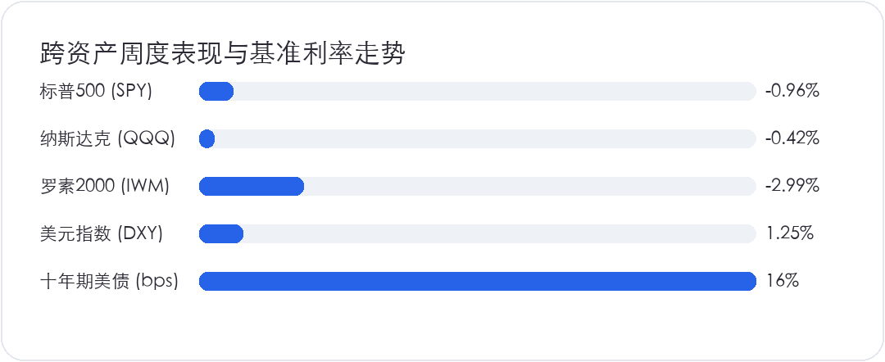
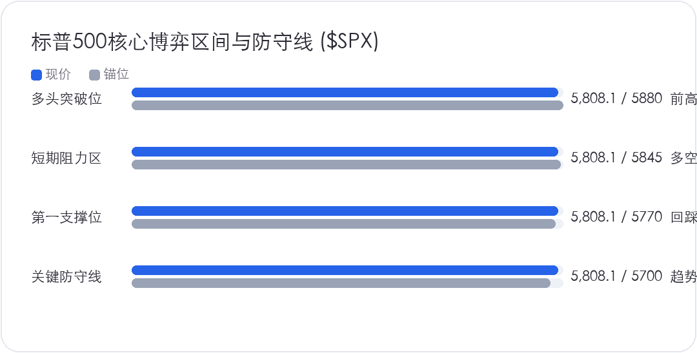

<div style="margin:0;padding:0;background:#f5f7fa;color:#2a2a34;font-size:16px;line-height:1.9;font-family:-apple-system,BlinkMacSystemFont,'SF Pro Text','PingFang SC','Hiragino Sans GB','Microsoft YaHei',Arial,sans-serif;font-variant-numeric:tabular-nums;font-feature-settings:'tnum' 1,'lnum' 1;text-align:left !important;text-align-last:left;letter-spacing:0;word-spacing:normal;white-space:normal;word-break:normal;box-sizing:border-box;"><div style="margin:0;background:#ffffff;padding:28px 22px 44px 22px;box-sizing:border-box;text-align:left !important;text-align-last:left;letter-spacing:0;word-spacing:normal;white-space:normal;word-break:normal;"><p style="display:block;width:100%;margin:0 0 12px 0;padding:0;color:#2763e9;font-size:10px;line-height:1.6;font-weight:650;letter-spacing:0.12em;text-align:center !important;text-align-last:center;word-spacing:normal;white-space:normal;word-break:normal;box-sizing:border-box;">美股 · 期权 · 资讯 · 观点</p><div style="margin:0 0 30px 0;padding:0;text-align:center !important;text-align-last:center;word-spacing:normal;white-space:normal;word-break:normal;box-sizing:border-box;"></div><div style="margin:0 0 0 0;padding:28px 0 0 0;text-align:left !important;text-align-last:left;letter-spacing:0;word-spacing:normal;white-space:normal;word-break:normal;box-sizing:border-box;"><div style="margin:0 0 12px 0;padding:0;text-align:left !important;line-height:1.2;border:0;display:flex;align-items:center;gap:10px;text-align-last:left;letter-spacing:0;word-spacing:normal;white-space:normal;word-break:normal;box-sizing:border-box;"><span style="display:inline-block;flex:0 0 auto;vertical-align:middle;color:#2763e9;font-size:12px;font-weight:850;letter-spacing:0.12em;line-height:1.2;text-transform:uppercase;border:0;box-sizing:border-box;">0 · MACRO</span><span style="display:block;flex:1 1 auto;min-width:36px;vertical-align:middle;height:1px;margin:0 0 2px 0;background:#2763e9;line-height:1px;font-size:0;border:0;box-sizing:border-box;"></span></div><p style="margin:0 0 16px 0;padding:0;color:#2a2a34;font-size:22px;line-height:1.45;font-weight:850;text-align:left !important;letter-spacing:0;text-align-last:left;word-spacing:normal;white-space:normal;word-break:normal;box-sizing:border-box;">标普连涨势头在四点二美债利率前止步，大盘结束连续六周冲高</p><p style="margin:0 0 16px 0;padding:0;color:#454550;font-size:16px;line-height:1.9;font-weight:400;text-align:left !important;letter-spacing:0;word-spacing:normal;white-space:normal;word-break:normal;text-align-last:left;box-sizing:border-box;">过去一周美股高位的上攻动能明显衰减，标普 500 指数全周收跌 0.96% 至 5,808.12 点，正式终结了此前连续六周刷新历史纪录的单边行情。科技权重居多的纳斯达克 100 指数展现出一定的抗跌韧性，全周微跌 0.42% 报收 493.55 点，但盘面追高意愿已经大幅收敛。利率敏感型资产则首当其冲，罗素 2000 小盘股指数全周重挫 2.99% 收于 220.10 点，几乎悉数回吐了十月中旬以来的涨幅。</p><p style="margin:0 0 16px 0;padding:0;color:#454550;font-size:16px;line-height:1.9;font-weight:400;text-align:left !important;letter-spacing:0;word-spacing:normal;white-space:normal;word-break:normal;text-align-last:left;box-sizing:border-box;">从底层无风险资产来看，全球资产定价之锚十年期美债收益率再度上冲 16 个基点收在 4.24%，较九月中旬美联储宣布降息 50 个基点后的低点 3.70% 已累计暴拉 54 个基点。美元指数全周攀升 1.25% 站上 104.20 关口，现货黄金则在 2,745 美元高位持续吸引地缘与赤字对冲盘。客观对账此前的推演框架，原本市场普遍预期美联储启动大幅降息周期将拉低长端美债利率并支撑美股估值扩张，然而现实走势完全反向，长端利率不降反升，直接击碎了传统利率周期的线性推导逻辑。</p></div><div style="margin:30px 0 0 0;padding:28px 0 0 0;text-align:left !important;text-align-last:left;letter-spacing:0;word-spacing:normal;white-space:normal;word-break:normal;box-sizing:border-box;"><div style="margin:0 0 12px 0;padding:0;text-align:left !important;line-height:1.2;border:0;display:flex;align-items:center;gap:10px;text-align-last:left;letter-spacing:0;word-spacing:normal;white-space:normal;word-break:normal;box-sizing:border-box;"><span style="display:inline-block;flex:0 0 auto;vertical-align:middle;color:#2763e9;font-size:12px;font-weight:850;letter-spacing:0.12em;line-height:1.2;text-transform:uppercase;border:0;box-sizing:border-box;">1 · MACRO</span><span style="display:block;flex:1 1 auto;min-width:36px;vertical-align:middle;height:1px;margin:0 0 2px 0;background:#2763e9;line-height:1px;font-size:0;border:0;box-sizing:border-box;"></span></div><p style="margin:0 0 16px 0;padding:0;color:#2a2a34;font-size:22px;line-height:1.45;font-weight:850;text-align:left !important;letter-spacing:0;text-align-last:left;word-spacing:normal;white-space:normal;word-break:normal;box-sizing:border-box;">降息之后长端美债缘何暴拉五十基点，赤字供给与强韧数据打破降息幻觉</p><p style="margin:0 0 16px 0;padding:0;color:#454550;font-size:16px;line-height:1.9;font-weight:400;text-align:left !important;letter-spacing:0;word-spacing:normal;white-space:normal;word-break:normal;text-align-last:left;box-sizing:border-box;">造成长端美债收益率反常飙升的核心机制，在于基本面韧性与财政赤字扩张带来的双重共振。首先是美国实体经济的实际成色超出了降息前夕的悲观假设，九月美国零售销售环比上涨 0.4%，失业率维持在 4.1% 的低位，亚特兰大联储 GDPNow 模型更将三季度经济增速追踪大幅上修至 3.4%。强韧的基本面彻底证伪了经济硬着陆叙事，迫使固定收益市场将美联储未来的降息终点利率从 2.8% 迅速拔高至 3.5% 附近，过度透支的降息红利被剧烈重估。</p><p style="margin:4px 0 16px 0;padding:0;text-align:center !important;text-align-last:center;word-spacing:normal;white-space:normal;word-break:normal;box-sizing:border-box;"></p><p style="margin:0 0 16px 0;padding:0;color:#454550;font-size:16px;line-height:1.9;font-weight:400;text-align:left !important;letter-spacing:0;word-spacing:normal;white-space:normal;word-break:normal;text-align-last:left;box-sizing:border-box;">更深层次的资产负债表约束在于财政端的天量供给。美国 2024 财年联邦赤字规模录得 1.83 万亿美元，巨额国债持续天量发行不仅让一级交易商承受了极重的久期消化压力，也促使长期资本要求更高的期限溢价。当十年期美债收益率飙升至 4.24% 时，美股股票风险溢价被挤压至接近历史绝对低位，标普 500 指数目前高达 21.8 倍的远期市盈率面临无风险利率的实质性引力牵引，大盘在当前点位的估值容错空间已变得极度狭窄。</p></div><div style="margin:30px 0 0 0;padding:28px 0 0 0;text-align:left !important;text-align-last:left;letter-spacing:0;word-spacing:normal;white-space:normal;word-break:normal;box-sizing:border-box;"><div style="margin:0 0 12px 0;padding:0;text-align:left !important;line-height:1.2;border:0;display:flex;align-items:center;gap:10px;text-align-last:left;letter-spacing:0;word-spacing:normal;white-space:normal;word-break:normal;box-sizing:border-box;"><span style="display:inline-block;flex:0 0 auto;vertical-align:middle;color:#2763e9;font-size:12px;font-weight:850;letter-spacing:0.12em;line-height:1.2;text-transform:uppercase;border:0;box-sizing:border-box;">2 · EARNINGS</span><span style="display:block;flex:1 1 auto;min-width:36px;vertical-align:middle;height:1px;margin:0 0 2px 0;background:#2763e9;line-height:1px;font-size:0;border:0;box-sizing:border-box;"></span></div><p style="margin:0 0 16px 0;padding:0;color:#2a2a34;font-size:22px;line-height:1.45;font-weight:850;text-align:left !important;letter-spacing:0;text-align-last:left;word-spacing:normal;white-space:normal;word-break:normal;box-sizing:border-box;">科技五巨头财报与非农数据撞车，标普迎来波动率急剧升温的超级周</p><p style="margin:0 0 16px 0;padding:0;color:#454550;font-size:16px;line-height:1.9;font-weight:400;text-align:left !important;letter-spacing:0;word-spacing:normal;white-space:normal;word-break:normal;text-align-last:left;box-sizing:border-box;">本周美股将迎来下半年决定性的宏观超级周，企业盈利与重磅数据将展开正面交锋。在企业盈利维度，标普 500 市值权重前列的科技五大巨头将集中披露三季度业绩。周二盘后谷歌母公司 Alphabet (<code><strong style="color:#2a2a34;font-weight:700;box-sizing:border-box;">GOOGL</strong></code>) 打头阵，市场核心审视其云计算业务营收增速以及搜索广告抵御 AI 分流的坚韧程度；周三盘后微软 (<code><strong style="color:#2a2a34;font-weight:700;box-sizing:border-box;">MSFT</strong></code>) 与 Meta (<code><strong style="color:#2a2a34;font-weight:700;box-sizing:border-box;">META</strong></code>) 联袂登场，微软 Azure 能否维持 33% 以上的扩张斜率，以及 Meta 对 2025 年资本开支的指引规模，将直接校准科技板块对 AI 投资回报率的容忍度；周四盘后苹果 (<code><strong style="color:#2a2a34;font-weight:700;box-sizing:border-box;">AAPL</strong></code>) 与亚马逊 (<code><strong style="color:#2a2a34;font-weight:700;box-sizing:border-box;">AMZN</strong></code>) 接棒，市场焦点在于 iPhone 16 换机周期是否如预期启动，以及 AWS 云业务能否持续保持加速回升。</p><p style="margin:4px 0 16px 0;padding:0;text-align:center !important;text-align-last:center;word-spacing:normal;white-space:normal;word-break:normal;box-sizing:border-box;"></p><p style="margin:0 0 16px 0;padding:0;color:#454550;font-size:16px;line-height:1.9;font-weight:400;text-align:left !important;letter-spacing:0;word-spacing:normal;white-space:normal;word-break:normal;text-align-last:left;box-sizing:border-box;">宏观数据日历同样高密排布。周三公布三季度实际 GDP 初值（市场预期年化增长 3.0%），周四公布美联储最青睐的九月核心 PCE 物价指数（市场预期环比上涨 0.3%，同比上涨 2.6%），周五则迎来十月非农就业报告。受海伦妮与米尔顿飓风以及波音大罢工的双重扰动，十月非农新增就业预期被压低至 11 万人左右。若数据失真过大，可能引发市场对劳动力市场健康度的剧烈博弈。</p></div><div style="margin:30px 0 0 0;padding:28px 0 0 0;text-align:left !important;text-align-last:left;letter-spacing:0;word-spacing:normal;white-space:normal;word-break:normal;box-sizing:border-box;"><div style="margin:0 0 12px 0;padding:0;text-align:left !important;line-height:1.2;border:0;display:flex;align-items:center;gap:10px;text-align-last:left;letter-spacing:0;word-spacing:normal;white-space:normal;word-break:normal;box-sizing:border-box;"><span style="display:inline-block;flex:0 0 auto;vertical-align:middle;color:#2763e9;font-size:12px;font-weight:850;letter-spacing:0.12em;line-height:1.2;text-transform:uppercase;border:0;box-sizing:border-box;">3 · MACRO</span><span style="display:block;flex:1 1 auto;min-width:36px;vertical-align:middle;height:1px;margin:0 0 2px 0;background:#2763e9;line-height:1px;font-size:0;border:0;box-sizing:border-box;"></span></div><p style="margin:0 0 16px 0;padding:0;color:#2a2a34;font-size:22px;line-height:1.45;font-weight:850;text-align:left !important;letter-spacing:0;text-align-last:left;word-spacing:normal;white-space:normal;word-break:normal;box-sizing:border-box;">面对四点二利率门槛与巨头财报考验，多空三套推演防线全面确立</p><p style="margin:0 0 16px 0;padding:0;color:#454550;font-size:16px;line-height:1.9;font-weight:400;text-align:left !important;letter-spacing:0;word-spacing:normal;white-space:normal;word-break:normal;text-align-last:left;box-sizing:border-box;">面对高位利率与超级财报的正面碰撞，资产配置不应做单边豪赌，而需依托明确的技术阈值建立多套应对推演：</p><p style="margin:0 0 16px 0;padding:0;color:#454550;font-size:16px;line-height:1.9;font-weight:400;text-align:left !important;letter-spacing:0;word-spacing:normal;white-space:normal;word-break:normal;text-align-last:left;box-sizing:border-box;">其一，乐观情景。如果微软与 Alphabet 云计算营收增速双双超预期，展现出企业端 AI 商业化落地的真实变现能力，同时核心 PCE 数据环比稳在 0.2% 左右未出现反弹，指数将凭借强劲的盈利兑现消化估值压力。在此情景下，标普 500 指数预计将迅速收复 5,845 点短期阻力，并向 5,880 点历史前高发起冲击，高科技大市值龙头将重新引领市场 risk-on 情绪。</p><p style="margin:0 0 16px 0;padding:0;color:#454550;font-size:16px;line-height:1.9;font-weight:400;text-align:left !important;letter-spacing:0;word-spacing:normal;white-space:normal;word-break:normal;text-align-last:left;box-sizing:border-box;">其二，基准情景。若科技巨头业绩整体符合预期，但管理层对 2025 年资本开支的高昂指引引发自由现金流担忧，加之十年期美债收益率维持在 4.18% 至 4.28% 高位区间持续盘整，指数将进入典型的消化整固期。标普 500 将在 5,770 点至 5,845 点区间反复宽幅拉锯，市场资金将进一步向资产负债表稳健、具备持续派息能力的超级现金流巨头抱团，小盘股与高负债企业仍将承受相对折价。</p><p style="margin:0 0 16px 0;padding:0;color:#454550;font-size:16px;line-height:1.9;font-weight:400;text-align:left !important;letter-spacing:0;word-spacing:normal;white-space:normal;word-break:normal;text-align-last:left;box-sizing:border-box;">其三，悲观情景。若核心科技股资本开支增长未能换来相应的营收提速，引发市场对 AI 投资回报率放缓的恐慌，同时美债利率因财政赤字忧虑上冲突破 4.30% 关口，市场将遭遇利率与业绩的双重杀跌。标普 500 一旦失守 5,770 点第一支撑位，可能引发系统性量化基金的止损平仓，进而加速回踩 5,700 点关键防守关口。在操作纪律上，财报发布前宜保持充裕现金头寸，适度利用波动率工具构建对冲，避免在数据密集落地前过度暴露单边单股风险。</p></div><div style="margin:34px 0 0 0;padding:0;border:1px solid #e4e7ed;border-radius:24px;background:#fafbfc;text-align:center !important;box-sizing:border-box;overflow:hidden;text-align-last:center;word-spacing:normal;white-space:normal;word-break:normal;"><p style="margin:0;padding:18px 16px;color:#6a6a78;font-size:14px;line-height:1.8;text-align:center !important;background:#fafbfc;box-sizing:border-box;text-align-last:center;word-spacing:normal;white-space:normal;word-break:normal;">长按识别二维码关注公众号，持续获取每日美股资讯与观点。</p><p style="margin:0;text-align:center !important;background:#ffffff;box-sizing:border-box;text-align-last:center;word-spacing:normal;white-space:normal;word-break:normal;"></p></div><p style="margin:28px 0 0 0;padding:22px 0 0 0;color:#9a9aa8;font-size:12px;line-height:1.8;text-align:center !important;text-align-last:center;word-spacing:normal;white-space:normal;word-break:normal;box-sizing:border-box;">免责声明：本文仅为个人市场观察和交易复盘，不构成任何投资建议；市场有风险，交易需谨慎。点击阅读原文可跳转博客。</p></div></div>
